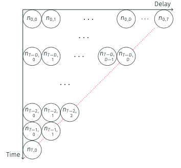
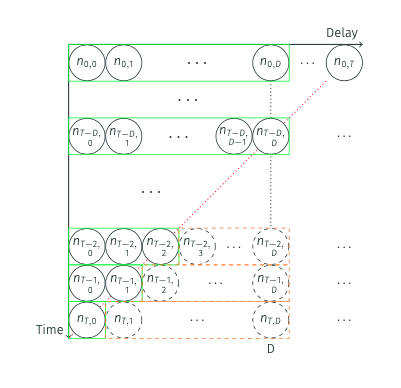
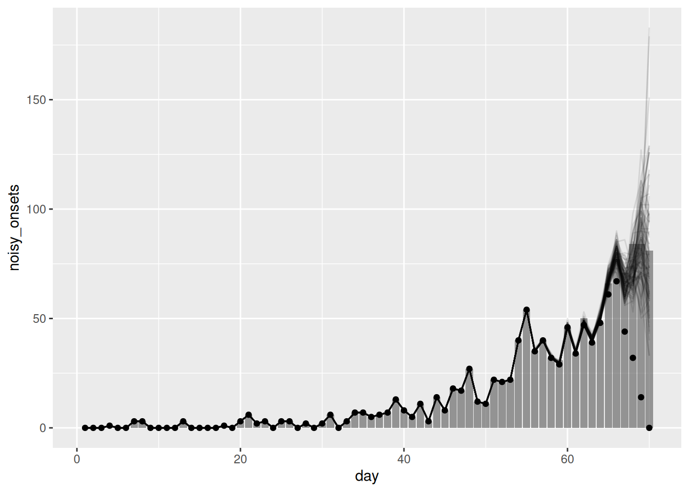
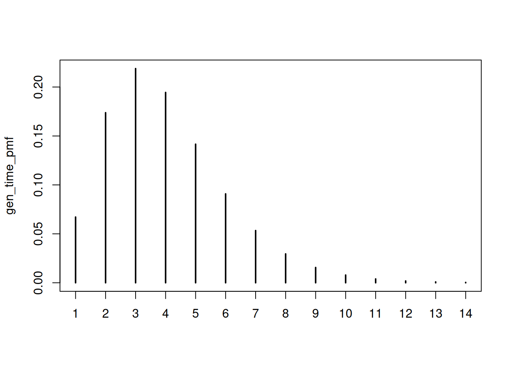
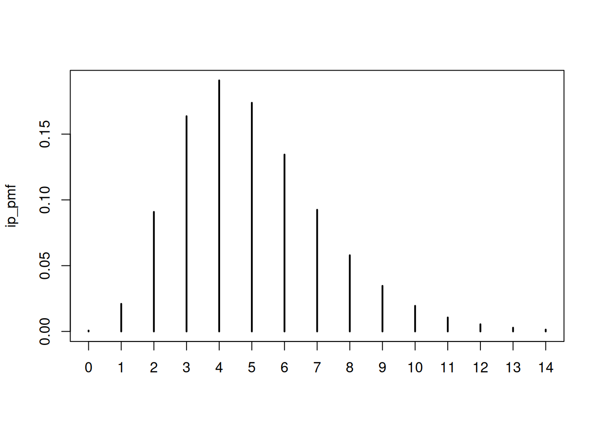
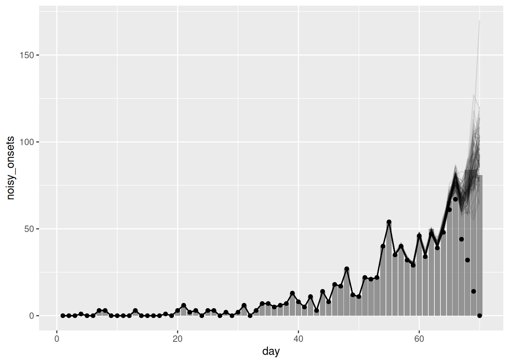
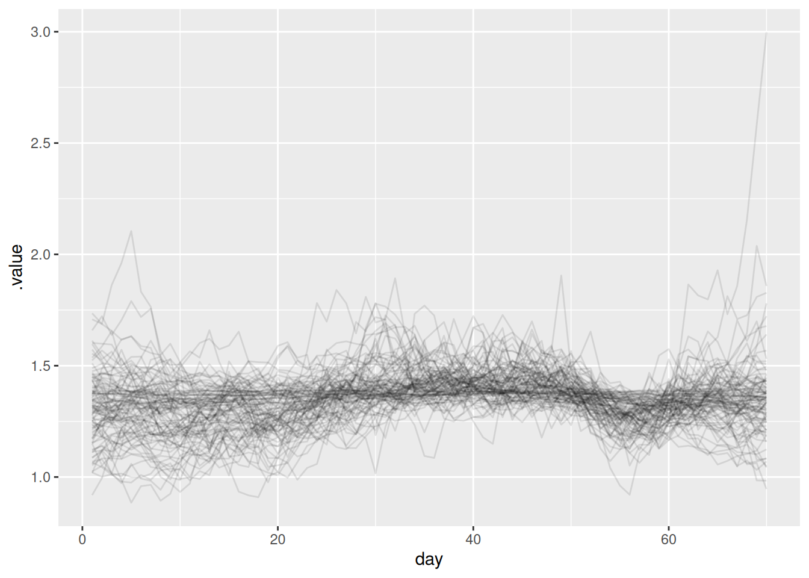

library("nfidd")
library("dplyr")
library("tidyr")
library("ggplot2")
library("tidybayes")Nowcasting with an unknown reporting delay
Introduction
In the last session we introduced the idea of nowcasting using a simple model. However, this approach had problems: we didn’t fully account for uncertainty, or for example observation error in the primary events, and it’s not a fully generative model of the data reporting process. And as we saw, if we get the delay distribution wrong, we can get the nowcast very wrong.
A better approach is to jointly estimate the delay distribution together with the nowcast. We can do this by using information from multiple snapshots of the data as it changes over time (using a data structure called the “reporting triangle”). In this session, we’ll introduce this approach to joint estimation in nowcasting. At the end we’ll then demonstrate a way to combine this with our previous work estimating the reproduction number, steadily improving our real time outbreak model.
Slides
Objectives
This session aims to introduce how to do nowcasting if the reporting delay distribution is unknown.
NoteSetup
Source file
The source file of this session is located at sessions/joint-nowcasting.qmd.
Libraries used
In this session we will use the nfidd package to load a data set of infection times and access stan models and helper functions, the dplyr and tidyr packages for data wrangling, ggplot2 library for plotting, and the tidybayes package for extracting results of the inference.
Tip
The best way to interact with the material is via the Visual Editor of RStudio.
Initialisation
We set a random seed for reproducibility. Setting this ensures that you should get exactly the same results on your computer as we do. We also set an option that makes cmdstanr show line numbers when printing model code. This is not strictly necessary but will help us talk about the models. Finally, we set an option to not warn about the partial definition of initial conditions.
set.seed(123)
options(cmdstanr_print_line_numbers = TRUE)
options(cmdstanr_warn_inits = FALSE)Joint estimation of delay distributions and nowcasting
Motivation
So far we have assumed that the delay distribution is known. In practice, this is often not the case and we need to estimate it from the data. As we discussed in the session on biases in delay distributions, this can be done using individual data and then passing this estimate to a simple nowcasting model. However, this has the disadvantage that the nowcasting model does not take into account the uncertainty in the delay distribution or observation error of the primary events (and potentially some other issues we will cover in this session).
In the nowcasting concepts session we also saw that getting the delay distribution wrong can lead to very poor nowcasts.
A better approach is to jointly estimate the delay distribution together with the nowcast. This builds on the data simulation approach we used in the concepts session, but now we model the entire process at the population level with observation error.
Extending our data simulation approach
Recall from the nowcasting concepts session that we simulated individual reporting delays and then aggregated them. Now we’ll simulate the same process but at the population level with observation error - for the same reasons we made this change in the convolutions session.
First, let’s generate our simulated onset dataset as before:
gen_time_pmf <- make_gen_time_pmf()
ip_pmf <- make_ip_pmf()
onset_df <- simulate_onsets(
make_daily_infections(infection_times), gen_time_pmf, ip_pmf
)
head(onset_df)# A tibble: 6 × 3
day onsets infections
<dbl> <int> <int>
1 1 0 0
2 2 0 1
3 3 0 0
4 4 1 2
5 5 0 1
6 6 0 1cutoff <- 71We then need to simulate the reporting delays:
reporting_delay_pmf <- censored_delay_pmf(
rlnorm, max = 15, meanlog = 1, sdlog = 0.5
)
plot(reporting_delay_pmf)
We can then simulate the data by day, onset day, and reporting day by applying the reporting delay distribution to the onsets (notice how this is nearly identical to the convolution we saw in the convolutions session except that we are not applying the sum):
reporting_triangle <- onset_df |>
filter(day < cutoff) |>
mutate(
reporting_delay = list(
tibble(d = 0:15, reporting_delay = reporting_delay_pmf)
)
) |>
unnest(reporting_delay) |>
mutate(
reported_onsets = rpois(n(), onsets * reporting_delay)
) |>
mutate(reported_day = day + d)
tail(reporting_triangle)# A tibble: 6 × 7
day onsets infections d reporting_delay reported_onsets reported_day
<dbl> <int> <int> <int> <table[1d]> <int> <dbl>
1 70 76 115 10 0.0028236523 0 80
2 70 76 115 11 0.0014853431 0 81
3 70 76 115 12 0.0007961839 0 82
4 70 76 115 13 0.0004601063 0 83
5 70 76 115 14 0.0002700624 0 84
6 70 76 115 15 0.0001920444 0 85We also apply the Poisson observation error to the reported onsets to capture our uncertainty in the reporting process (remember we have lost uncertainty in the onsets as we are not individually simulating the reporting delays).
To recover the onsets onsets by day we group by day and then sum reported onsets across report days.
noisy_onsets_df <- reporting_triangle |>
summarise(noisy_onsets = sum(reported_onsets), .by = day)
tail(noisy_onsets_df)# A tibble: 6 × 2
day noisy_onsets
<dbl> <int>
1 65 66
2 66 77
3 67 71
4 68 84
5 69 84
6 70 81As we only observed reported cases up to the current day we need to filter it to only include the data we have observed:
filtered_reporting_triangle <- reporting_triangle |>
filter(reported_day <= max(day))
tail(noisy_onsets_df)# A tibble: 6 × 2
day noisy_onsets
<dbl> <int>
1 65 66
2 66 77
3 67 71
4 68 84
5 69 84
6 70 81Finally, we sum this to get the counts we actually observe. This is the same as the date we corrected for right truncation in the nowcasting concepts session.
available_onsets <- filtered_reporting_triangle |>
summarise(available_onsets = sum(reported_onsets), .by = day)
tail(available_onsets)# A tibble: 6 × 2
day available_onsets
<dbl> <int>
1 65 61
2 66 67
3 67 44
4 68 32
5 69 14
6 70 0Understanding the data structure
Notice how this simulation creates a similar, but different, data structure than in the concepts session.
NoteThree-dimensional epidemiological data
So far we’ve worked with data that has two dimensions. Such as:
- Onset day: when symptoms began
- Onset counts: the number of cases that occurred on each day
Now we are introducing a third dimension:
- Report day: when the case enters our surveillance system
This means that to recover the true onset counts we need to sum across the third dimension and we may not be able to do this if all the data has not been reported yet (i.e. we have right truncation in our data). This is just a reformulation of the nowcasting problem we saw in the nowcasting concepts session.
This richer data structure contains information about both the delay distribution and the final expected counts so we can use it to jointly estimate both which was not possible with the simpler data structure we used in the nowcasting concepts session.
Mathematical formulation
We can formalise this process mathematically. The total number of onsets on day \(t\) is: \[ N_{t} = \sum_{d=0}^{D} n_{t,d} \]
where \(n_{t,d}\) is the number of onsets on day \(t\) that are reported on day \(t+d\), and \(D\) is the maximum delay.
We model each component as: \[ n_{t,d} \mid \lambda_{t},p_{t,d} \sim \text{Poisson} \left(\lambda_{t} \times p_{t,d} \right),\ t=1,...,T. \]
where:
- \(\lambda_{t}\) is the expected number of onsets on day \(t\)
- \(p_{t,d}\) is the probability that an onset on day \(t\) is reported on day \(t+d\)
This approach jointly estimates the delay distribution (\(p_{t,d}\)) and the underlying onset counts (\(\lambda_{t}\)) from the observed data.
ImportantModelling options
We now have two main modelling options:
- How we model the expected number of onsets \(\lambda_{t}\)
- How we model the probability of reporting \(p_{t,d}\)
We will explore these in the next section.
A key insight is that we can split each \(n_{t,d}\) into observed and unobserved components:
\[n_{t,d} = n_{t,d}^{obs} + n_{t,d}^{miss}\]
where:
- \(n_{t,d}^{obs}\) is what we observe (when \(t+d \leq\) current day)
- \(n_{t,d}^{miss}\) is what we need to estimate (when \(t+d >\) current day)
The joint model uses the observed data to estimate both the delay distribution and the underlying onset counts, which then allows us to predict the missing entries.
NoteThe reporting triangle
This data structure is sometimes called the “reporting triangle” in the literature because when visualised as a matrix (with onset days as rows and reporting days as columns), the observed data (\(n_{t,d}^{obs}\)) creates a triangular shape.

Nowcasting aims to complete this triangle by estimating the missing entries (\(n_{t,d}^{miss}\)).

Once completed, we sum across the rows to get our nowcast of the true onset counts.
Fitting the joint model
For fitting the joint model specification follows our data simulation approach but we have to make choices about how to model the expected number of onsets \(\lambda_{t}\) and the probability of reporting \(p_{t,d}\).
As usual, we start by loading the model:
joint_mod <- nfidd_cmdstan_model("joint-nowcast")
joint_mod 1: functions {
2: #include "functions/geometric_random_walk.stan"
3: #include "functions/observe_onsets_with_delay.stan"
4: #include "functions/combine_obs_with_predicted_obs_rng.stan"
5: }
6:
7: data {
8: int n; // number of days
9: int m; // number of reports
10: array[n] int p; // number of observations per day
11: array[m] int obs; // observed symptom onsets
12: int d; // number of reporting delays
13: }
14:
15: transformed data{
16: array[n] int P = to_int(cumulative_sum(p));
17: array[n] int D = to_int(cumulative_sum(rep_array(d, n)));
18: }
19:
20: parameters {
21: real<lower=0> init_onsets;
22: array[n-1] real rw_noise;
23: real<lower=0> rw_sd;
24: simplex[d] reporting_delay; // reporting delay distribution
25: }
26:
27: transformed parameters {
28: array[n] real onsets = geometric_random_walk(init_onsets, rw_noise, rw_sd);
29: array[m] real onsets_by_report = observe_onsets_with_delay(onsets, reporting_delay, P, p);
30: }
31:
32: model {
33: // Prior
34: init_onsets ~ normal(1, 5) T[0,];
35: rw_noise ~ std_normal();
36: rw_sd ~ normal(0, 0.05) T[0,];
37: reporting_delay ~ dirichlet(rep_vector(1, d));
38: // Likelihood
39: obs ~ poisson(onsets_by_report);
40: }
41:
42: generated quantities {
43: array[d*n] real complete_onsets_by_report = observe_onsets_with_delay(onsets, reporting_delay, D, rep_array(d, n));
44: array[n] int nowcast = combine_obs_with_predicted_obs_rng(obs, complete_onsets_by_report, P, p, d, D);
45: }
46:
TipModel details
This time we won’t go into details of the model. For now, it is important that you understand the concept, but as the models get more complex, we hope that you trust us that the model does what we describe above.
One thing to note is that we are now fitting the initial number of symptom onsets (init_onsets). This is different from earlier when we had to pass the initial number of infections (I0) as data. In most situations, this number would be unknown, so what we do here is closer to what one would do in the real world.
NoteTake two minutes
What are the models we have picked for the onsets (\(\lambda_{t}\)) and the reporting delay distribution (\(p_{t,d}\))?
NoteSolution
- \(\lambda_{t}\) is modelled using a geometric random walk.
- \(p_{t,d}\) is modelled using a Dirichlet distribution (i.e. a multinomial distribution with a constraint that the sum of the probabilities is 1 - this allows the delay distribution to be flexible).
We then fit it to data:
joint_data <- list(
n = length(unique(filtered_reporting_triangle$day)), # number of days
m = nrow(filtered_reporting_triangle), # number of reports
p = filtered_reporting_triangle |>
group_by(day) |>
filter(d == max(d)) |>
mutate(d = d + 1) |>
pull(d), # number of observations per day
obs = filtered_reporting_triangle$reported_onsets, # observed symptom onsets
d = 16 # number of reporting delays
)
joint_nowcast_fit <- nfidd_sample(joint_mod, data = joint_data)joint_nowcast_fit variable mean median sd mad q5 q95 rhat ess_bulk ess_tail
lp__ 528.30 528.79 7.02 6.72 516.25 539.14 1.00 721 1063
init_onsets 0.76 0.71 0.30 0.29 0.35 1.31 1.00 2765 1513
rw_noise[1] -0.07 -0.10 1.01 1.01 -1.71 1.64 1.00 2833 1419
rw_noise[2] 0.05 0.05 0.99 0.96 -1.62 1.70 1.00 4161 1377
rw_noise[3] 0.21 0.23 0.94 0.95 -1.31 1.74 1.00 3223 1394
rw_noise[4] 0.22 0.21 1.00 1.01 -1.45 1.90 1.00 3594 1340
rw_noise[5] 0.33 0.34 0.98 1.01 -1.27 1.91 1.00 3543 1340
rw_noise[6] 0.46 0.48 0.95 0.97 -1.07 2.01 1.00 3442 1417
rw_noise[7] 0.09 0.09 0.96 0.96 -1.45 1.68 1.00 3676 1273
rw_noise[8] -0.24 -0.23 0.95 0.96 -1.78 1.34 1.01 3133 1619
# showing 10 of 2348 rows (change via 'max_rows' argument or 'cmdstanr_max_rows' option)
Important
One benefit of this model is that, because we have decomposed the data into the reporting triangle, we can make a nowcast that uses the data we have available, augmented with predictions from the model. This should give us more accurate uncertainty estimates than the simple nowcasting models above (see stan/functions/combine_obs_with_predicted_obs_rng.stan but note the code is fairly involved).
We now extract this nowcast:
joint_nowcast_onsets <- joint_nowcast_fit |>
gather_draws(nowcast[day]) |>
ungroup() |>
filter(.draw %in% sample(.draw, 100))Finally, we can plot the nowcast alongside the observed data:
ggplot(joint_nowcast_onsets, aes(x = day)) +
geom_col(
data = noisy_onsets_df, mapping = aes(y = noisy_onsets), alpha = 0.6
) +
geom_line(mapping = aes(y = .value, group = .draw), alpha = 0.1) +
geom_point(data = available_onsets, mapping = aes(y = available_onsets))
Tip
Reminder: The points in this plot represent the data available when the nowcast was made (and so are truncated) whilst the bars represent the finally reported data (a perfect nowcast would exactly reproduce these).
TipTake 5 minutes
Look back at the last three nowcasts. How do they compare? What are the advantages and disadvantages of each? Could we improve the nowcasts further?
NoteSolution
- The simple nowcast struggled to capture the generative process of the data and so produced poor nowcasts. The nowcast with the geometric random walk was better but still struggled to capture the generative process of the data. The joint nowcast was the best of the three as it properly handled the uncertainty and allowed us to fit the delay distribution versus relying on known delays.
- However, the joint nowcast is still quite simple (in the sense that no detailed mechanism or reporting process is being modelled) and so may struggle to capture more complex patterns in the data. In particular, the prior model for the geometric random walk assumes that onsets are the same as the previous day with some statistical noise. This may not be a good assumption in a rapidly changing epidemic (where the reproduction number is not near 1).
- In addition, whilst we say it is “quite simple” as should be clear from the code, it is quite complex and computationally intensive. This is because we are fitting a model to the reporting triangle, which is a much larger data set and so the model is relatively quite slow to fit.
Putting it all together: Estimating the reproduction number, nowcasting, and joint estimation of delay distributions
NoteKey learning points
- The renewal equation provides a better reflection of epidemic dynamics than simple geometric random walks as it is closer to the true generative process of the data.
- When reporting delays, don’t provide enough information to identify recent trends, the underlying generative model (renewal process) prevents bias
- Joint models can simultaneously estimate delays, nowcast, AND reproduction numbers without spurious declining trends
- Such models are computationally intensive but provide the most accurate and comprehensive real-time epidemic assessment. They avoid issues of passing estimates between the nowcast and the reproduction number estimation model.
Note
This section contains a lot of code and is quite complex. It is not necessary to understand all of it to get the main points of the session. We recommend reading through it to get a sense of how all the pieces fit together.
In the previous sessions, we have seen how to estimate the reproduction number and how to nowcast the data. We can now put these two pieces together to estimate the reproduction number and nowcast the data jointly. This should allow us to produce more accurate nowcasts as we can use the information from the reproduction number to inform the nowcast and vice versa.
As in the renewal session, we need to define the generation time distribution and an incubation period distribution. We will use the same distributions as in the renewal session for simplicity. These are:
plot(gen_time_pmf)
and
plot(ip_pmf)
We now load in the model:
joint_rt_mod <- nfidd_cmdstan_model("joint-nowcast-with-r")
joint_rt_mod 1: functions {
2: #include "functions/geometric_random_walk.stan"
3: #include "functions/renewal.stan"
4: #include "functions/convolve_with_delay.stan"
5: #include "functions/observe_onsets_with_delay.stan"
6: #include "functions/combine_obs_with_predicted_obs_rng.stan"
7: }
8:
9: data {
10: int n; // number of days
11: int m; // number of reports
12: array[n] int p; // number of observations per day
13: array[m] int obs; // observed symptom onsets
14: int d; // number of reporting delays
15: int gen_time_max; // maximum generation time
16: array[gen_time_max] real gen_time_pmf; // pmf of generation time distribution
17: int<lower = 1> ip_max; // max incubation period
18: array[ip_max + 1] real ip_pmf;
19: int h; // number of days to forecast
20: }
21:
22: transformed data{
23: array[n] int P = to_int(cumulative_sum(p));
24: array[n] int D = to_int(cumulative_sum(rep_array(d, n)));
25: }
26:
27: parameters {
28: real<lower = 0> init_I; // initial number of infected
29: real<lower = 0> init_R; // initial reproduction number
30: array[n-1] real rw_noise; // random walk noise
31: real<lower = 0> rw_sd; // random walk standard deviation
32: simplex[d] reporting_delay; // reporting delay distribution
33: }
34:
35: transformed parameters {
36: array[n] real R = geometric_random_walk(init_R, rw_noise, rw_sd);
37: array[n] real infections = renewal(init_I, R, gen_time_pmf);
38: array[n] real onsets = convolve_with_delay(infections, ip_pmf);
39: array[m] real onsets_by_report = observe_onsets_with_delay(onsets, reporting_delay, P, p);
40: }
41:
42: model {
43: // Prior
44: init_I ~ lognormal(0, 1);
45: init_R ~ normal(1, 0.5) T[0, ];
46: rw_noise ~ std_normal();
47: rw_sd ~ normal(0, 0.05) T[0,];
48: reporting_delay ~ dirichlet(rep_vector(1, d));
49: // Likelihood
50: obs ~ poisson(onsets_by_report);
51: }
52:
53: generated quantities {
54: array[d*n] real complete_onsets_by_report = observe_onsets_with_delay(onsets, reporting_delay, D, rep_array(d, n));
55: array[n] int nowcast = combine_obs_with_predicted_obs_rng(obs, complete_onsets_by_report, P, p, d, D);
56:
57: // Forecast the underlying onsets
58: array[h] real forecast;
59: if (h > 0) {
60: array[h + n - 1] real f_rw_noise;
61: for (i in 1:n-1) {
62: f_rw_noise[i] = rw_noise[i];
63: }
64: for (i in n:(h + n - 1)) {
65: f_rw_noise[i] = normal_rng(0, 1);
66: }
67: array[h + n] real f_R = geometric_random_walk(init_R, f_rw_noise, rw_sd);
68: array[h + n] real f_infections = renewal(init_I, f_R, gen_time_pmf);
69: array[h + n] real f_onsets = convolve_with_delay(f_infections, ip_pmf);
70: for (i in 1:h) {
71: forecast[i] = poisson_rng(f_onsets[n + i]);
72: }
73: }
74: }
75:
TipTake 2 minutes
Familiarise yourself with the model above. Can you see how it combines the nowcasting and the estimation of the reproduction number? Can you suggest how you swap in the simple nowcasting model whilst keeping the estimation of the reproduction number?
NoteSolution
Essentially rather than using observe_onsets_with_delay.stan we would use condition_onsets_by_report.stan and pass in the proportion reported as a data. This would allow us to use the simple nowcasting model whilst still estimating the reproduction number. We would also remove the generated quantities block as we are not nowcasting the data, and simplify the observations to just the number of onsets.
Now let’s fit the final model for this session!
joint_rt_data <- c(joint_data,
list(
gen_time_max = length(gen_time_pmf),
gen_time_pmf = gen_time_pmf,
ip_max = length(ip_pmf) - 1,
ip_pmf = ip_pmf,
h = 0 # this is a small easter egg for the attentive reader
)
)
joint_rt_fit <- nfidd_sample(
joint_rt_mod, data = joint_rt_data,
adapt_delta = 0.95,
max_treedepth = 12,
init = \() list(init_R = 1, rw_sd = 0.01)
)
Tip
We use adapt_delta = 0.95 here as this is a relatively complex model with a difficult-to-explore posterior. Increasing this setting decreases the step size of the sampler and so makes it easier for it to explore the posterior. The downside is that fitting then takes longer.
joint_rt_fit variable mean median sd mad q5 q95 rhat ess_bulk ess_tail
lp__ 513.81 513.88 7.09 7.53 501.60 524.77 1.00 563 1041
init_I 2.86 2.37 1.70 1.06 1.23 6.14 1.00 693 506
init_R 1.26 1.29 0.18 0.15 0.95 1.53 1.01 616 470
rw_noise[1] 0.03 0.00 1.00 1.00 -1.63 1.67 1.00 2282 1349
rw_noise[2] 0.00 0.01 1.01 1.00 -1.71 1.63 1.00 2229 1392
rw_noise[3] 0.04 0.05 1.00 0.99 -1.65 1.70 1.00 2321 1421
rw_noise[4] -0.07 -0.06 0.98 0.93 -1.70 1.49 1.00 3568 1237
rw_noise[5] -0.03 -0.06 0.96 0.99 -1.57 1.55 1.00 2706 1467
rw_noise[6] -0.01 0.02 0.95 0.95 -1.57 1.54 1.00 3221 1514
rw_noise[7] -0.07 -0.09 0.99 0.97 -1.72 1.51 1.00 3378 1464
# showing 10 of 2489 rows (change via 'max_rows' argument or 'cmdstanr_max_rows' option)First, we can extract the nowcast and plot the nowcast alongside the observed data:
joint_nowcast_with_r_onsets <- joint_rt_fit |>
gather_draws(nowcast[day]) |>
ungroup() |>
filter(.draw %in% sample(.draw, 100))ggplot(joint_nowcast_with_r_onsets, aes(x = day)) +
geom_col(
data = noisy_onsets_df, mapping = aes(y = noisy_onsets), alpha = 0.6
) +
geom_line(mapping = aes(y = .value, group = .draw), alpha = 0.1) +
geom_point(data = available_onsets, mapping = aes(y = available_onsets))
We can also extract the reproduction number and plot it:
joint_rt <- joint_rt_fit |>
gather_draws(R[day]) |>
ungroup() |>
filter(.draw %in% sample(.draw, 100))
ggplot(joint_rt, aes(x = day, y = .value, group = .draw)) +
geom_line(alpha = 0.1)
TipTake 2 minutes
What do you think of the nowcast now? Does it look better than the previous one? What about the reproduction number?
NoteSolution
- Whilst the majority of the nowcast is similar we see that the nowcast for days nearer to the present is more accurate as this model can capture the trend in infections and account for delays from infection to onset and onset to report.
- The key takeaway from the reproduction number plot is that it looks similar to the one we estimated in the renewal session. This is because we have accounted for the truncation (otherwise it would be spuriously decreasing towards the end of the timeseries).
Going further
Challenge
- The simple nowcast models we showed here assumed perfect knowledge of the delay distribution. What happens when you instead use an estimate of the delay distribution from the data? Try and do this using methods from session on biases in delay distributions and see how it affects the simple nowcast models.
- Despite being fairly involved, the joint nowcast model we used here is still quite simple and may struggle to capture more complex patterns in the data.
Methods in practice
In practice, more complex methods are often needed to account for structure in the reporting process, time-varying delay distributions, or delays that vary by other factors (such as the age of cases). Consider how nowcasting approaches might differ in non-outbreak settings: What additional factors might you need to account for when applying these methods to routine surveillance data? Think about seasonal patterns, long-term trends, or other cyclical behaviours that might influence case reporting patterns.
- This session focused on the role of the generative process in nowcasting. This is an area of active research but (Lison et al. 2024) gives a good overview of the current state of the art.
- The
epinowcastpackage implements a more complex version of the model we have used here. It is designed to be highly flexible and so can be used to model a wide range of different datasets.
Wrap up
The learning objectives for this session were:
- Awareness of the breadth of methods to perform nowcasting
- \(R_t\) estimation as a nowcasting problem
Lison, Adrian, Sam Abbott, Jana Huisman, and Tanja Stadler. 2024. “Generative Bayesian Modeling to Nowcast the Effective Reproduction Number from Line List Data with Missing Symptom Onset Dates.” PLOS Computational Biology 20 (4): e1012021. https://doi.org/10.1371/journal.pcbi.1012021.